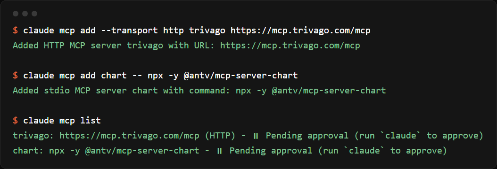

회사가 직접 만든 MCP(클로드에 붙이는 연결 도구) 중 생활에 바로 쓸 것만 골라, 연결 순서와 그대로 복사해 쓰는 질문을 정리했어요. 카드뉴스 속 장면은 전부 저희가 직접 연결해서 돌린 결과예요.
claude.ai(또는 Claude 앱) 왼쪽 아래 이름 → 설정 → 커넥터 → '커넥터 둘러보기'에서 구글 캘린더·Figma·트리바고처럼 쓰고 싶은 서비스를 찾아 '연결'을 누르세요. 로그인 창이 뜨면 로그인하고 '허용'을 누르면 끝이에요. 대화창 아래 도구 버튼에서 켜고 끌 수 있어요.
공식 목록(github.com/VoltAgent/official-mcp-servers)에서 서비스 이름 옆 링크를 열면 MCP 주소가 있어요. 설정 → 커넥터 → '사용자 지정 커넥터 추가'에 이름과 주소를 넣으세요. 예: 트리바고는 https://mcp.trivago.com/mcp (로그인 없이 바로 돼요).
터미널에서 아래처럼 한 줄씩 넣으면 돼요. 주소가 있는 서버는 --transport http 뒤에 주소를, 설치형 서버는 -- 뒤에 실행 명령을 넣어요. 그다음 claude를 실행하면 새 서버를 쓸지 물어보는데 '허용'을 고르세요.

커넥터에서 구글 캘린더를 연결하고, 아래 '일정' 질문을 그대로 붙여 넣으세요. 일정을 넣거나 지우기 전에는 Claude가 무엇을 할지 먼저 보여 줘요.
Claude Code에 chart 서버를 추가하고(3번), 숫자를 붙여 넣은 뒤 '차트' 질문을 쓰세요. 원형·막대·꺾은선·마인드맵 등 25가지를 그려요. 차트 이미지는 AntV 서버에서 만들어져 링크로 와요.
커넥터에서 Figma를 연결하고 '디자인' 질문을 쓰세요. Claude가 Figma에 새 파일을 만들어 직접 디자인하고, 스크린샷으로 확인해 겹친 글자를 고쳐요. 만든 파일은 Figma에서 바로 고쳐 쓸 수 있어요.
일정·업무: Todoist, Asana, Calendly, Dropbox, Evernote, Zapier · 그림·영상: ElevenLabs(목소리), DeepL(번역), Descript(영상 편집), Unsplash(사진) · 여행·생활: Booking.com, Expedia, Tripadvisor, Spotify, AllTrails · 디자인: Canva, Notion, Miro, Gamma(발표 자료). 전부 공식 목록에 링크가 있어요.
구글 캘린더 연결 후
다음 주 평일 저녁 7시 이후에 비어 있는 날을 내 캘린더에서 찾아서, 가장 빠른 날 저녁 7시에 '(약속 이름)' 일정을 2시간짜리로 넣어 줘. 넣기 전에 날짜를 먼저 보여 줘.
구글 캘린더 연결 후
이번 주 내 일정을 요일별로 한 줄씩 정리하고, 일정이 겹치거나 이동 시간이 빠듯한 곳을 짚어 줘.
트리바고 연결 후
(날짜) (몇 박), 어른 (몇) 명. (도시) (역·동네 이름) 걸어서 10분 안에서 1박 (예산) 원 아래 숙소를 찾아서 숙소 이름·1박 가격(원)·평점·역까지 거리를 표로 5개만 정리해 줘. 가격이 1박 기준인지 꼭 확인해.
트리바고 연결 후
(도시)의 다음 두 달 숙박 가격 흐름을 알려 주고, 가장 싼 주와 비싼 주를 짚어 줘.
AntV 차트 연결 후
아래 숫자로 항목별 비율을 원형 차트로 그리고, 가장 큰 항목 두 개를 한 줄씩 짚어 줘. (여기에 항목과 숫자)
AntV 차트 연결 후
아래 내용을 한눈에 보이는 마인드맵으로 그려 줘. 가운데는 '(주제)', 가지는 5개 안쪽으로. (여기에 메모)
Figma 연결 후
Figma에 새 디자인 파일을 만들고 1080x1350 인스타 포스터를 디자인해 줘. 내용: '(제목) / (날짜·시간) / (장소) / (한 줄 설명)'. (원하는 분위기) 색, 큰 제목, 깔끔하게. 다 만들면 스크린샷으로 확인하고 파일 링크를 알려 줘.
Figma 연결 후
이 Figma 파일(링크)의 첫 화면을 보고, 글자 크기·여백·색이 어색한 곳을 세 군데 고쳐 줘. 고치기 전과 후를 한 줄씩 설명해 줘.
도움이 되셨다면
@ai.antenna.kr
에서 바로 쓰는 AI 활용법을 계속 올립니다.